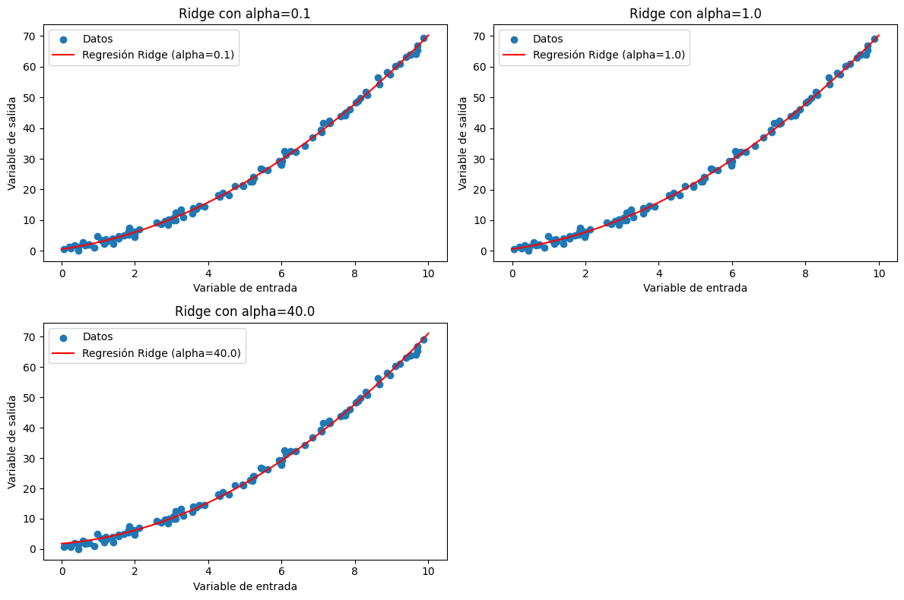
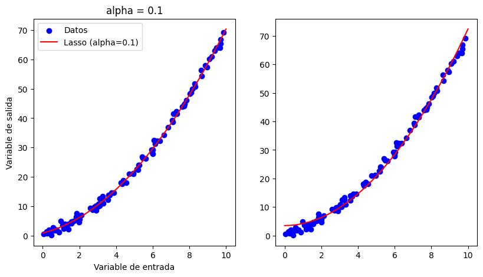

Otros tipos de regresión#
En el análisis de regresión, la selección de un conjunto óptimo de características y la gestión de la multicolinealidad son desafíos comunes. La Regresión Ridge y Lasso son dos enfoques que abordan estas cuestiones mediante la introducción de términos de penalización en la función de costo. Estos métodos no solo proporcionan soluciones más estables en presencia de multicolinealidad, sino que también pueden realizar selección automática de características, contribuyendo así a modelos más robustos y generalizables.
Regresión Ridge#
La regresión Ridge es un método de regresión lineal regularizado que aborda el problema de la multicolinealidad en los datos de entrada. En la regresión lineal clásica, cuando hay características altamente correlacionadas, el problema se vuelve mal condicionado, lo que significa que las estimaciones de los coeficientes pueden volverse muy sensibles a pequeñas variaciones en los datos. Ridge introduce una penalización en la magnitud de los coeficientes, lo que ayuda a suavizar el ajuste y mitigar la multicolinealidad.
La característica distintiva de la regresión Ridge es la introducción de un término de penalización L2 en la función de costo, que se agrega a la función de mínimos cuadrados ordinarios. Este término penaliza los coeficientes grandes, forzándolos a ser más pequeños y reduciendo así la complejidad del modelo. El parámetro de regularización, denotado como α, controla la fuerza de la penalización. Un α más grande conduce a coeficientes más pequeños y un modelo más regularizado.
La regresión Ridge es particularmente útil cuando se enfrenta a problemas de multicolinealidad, donde varias características están fuertemente correlacionadas. Al introducir la penalización L2, Ridge permite que todas las características contribuyan al modelo de manera más equitativa y robusta. Sin embargo, es importante ajustar cuidadosamente el valor de α mediante validación cruzada para equilibrar la reducción de la multicolinealidad y la capacidad del modelo para ajustarse a los datos. En resumen, la regresión Ridge es una herramienta valiosa en la modelización lineal cuando se busca estabilidad en presencia de multicolinealidad.
Entrenar una Regresión Ridge#
Seguimos con nuestro problema de los seguros y vamos a entrenar una Regresión Ridge:
from regression import calculate_error, get_train_test_validation
from sklearn.linear_model import Ridge
X_train, X_test, X_val, y_train, y_test, y_val = get_train_test_validation()
reg = Ridge()
reg.fit(X_train, y_train)
y_pred = reg.predict(X_val)
Hiperparámetros de la Regresión Ridge#
A continuación se muestran algunos de los hiperparámetros que podemos utilizar:
| HIPERPARÁMETROS DE UNA REGRESIÓN RIDGE | |||
|---|---|---|---|
| alpha | También conocido como el parámetro de regularización (α), controla la fuerza de la penalización L2. Un valor más alto de α aumenta la penalización y conduce a coeficientes más pequeños, lo que hace que el modelo sea más regularizado. Este parámetro es crucial y generalmente se ajusta mediante validación cruzada para encontrar el equilibrio adecuado entre la precisión del ajuste y la regularización. | ||
| fit_intercept | Este parámetro indica si se debe calcular o no la intersección (también conocida como el término de sesgo o constante) del modelo. Si es True, se calcula la intersección; si es False, el modelo se ajusta sin una intersección. | ||
| solver | Este parámetro especifica el algoritmo a utilizar para resolver el problema de optimización. Puede ser "auto", "svd", "cholesky", "lsqr" o "sparse_cg". La elección del solver puede depender del tamaño y la estructura de los datos. | ||
Vamos a explicar de forma breve un poco las hiperparámetros para que podamos decidir como configurarlos.
fit_intercept#
El parámetro fit_intercept en la regresión Ridge indica si se debe calcular el término de intersección (sesgo o constante) durante el ajuste del modelo. Cuando está configurado en True (por defecto), se calcula y ajusta un término de intersección. Si se establece en False, el modelo no incluye este término en la ecuación de regresión. La elección depende del contexto y si se espera que la variable de respuesta tenga un valor no nulo cuando todas las características son cero. Por lo general, se mantiene en True a menos que haya una razón específica para excluir el término de intersección.
solver#
El parámetro solver en la regresión Ridge de scikit-learn especifica el algoritmo utilizado para resolver el problema de optimización asociado con la estimación de los coeficientes del modelo. Este parámetro influye en cómo se encuentran los valores óptimos de los coeficientes para minimizar la función de costo asociada con la regresión Ridge.
Valores posibles:
“auto”: Delega la elección del solver al algoritmo, basándose en el tipo de datos y otros criterios.
“svd”: Utiliza la descomposición de valores singulares para resolver el problema.
“cholesky”: Emplea la descomposición de Cholesky para resolver el sistema de ecuaciones lineales asociado con la regresión Ridge. Es eficiente para conjuntos de datos pequeños.
“lsqr”: Utiliza el método iterativo de mínimos cuadrados (Least Squares QR) para resolver el problema. Es eficiente para grandes conjuntos de datos.
“sparse_cg”: Utiliza el método de gradiente conjugado para problemas grandes y dispersos.
Regresión Lasso#
La regresión Lasso (Least Absolute Shrinkage and Selection Operator) es un método de regresión lineal regularizado que introduce una penalización L1 en la función de costo para favorecer modelos más dispersos. A diferencia de la regresión Ridge, que utiliza una penalización L2, la penalización L1 en Lasso lleva algunos coeficientes de características a exactamente cero durante el ajuste del modelo. Esta propiedad única de Lasso facilita la selección automática de características, lo que puede ser beneficioso en situaciones donde solo un subconjunto de características es relevante para la predicción.
La función de costo de la regresión Lasso se compone de dos términos: el término de mínimos cuadrados ordinarios y la penalización L1, ponderada por un parámetro de regularización (α). A medida que α aumenta, la influencia de la penalización L1 se intensifica, llevando a más coeficientes a cero. Este proceso de selección de características es valioso en problemas de alta dimensionalidad, donde hay muchas características, pero solo unas pocas son informativas.
Un aspecto importante a considerar al utilizar la regresión Lasso es la elección adecuada del parámetro de regularización α. Este parámetro controla la fuerza de la penalización y, al igual que en Ridge, se ajusta típicamente mediante validación cruzada para encontrar el equilibrio óptimo entre la precisión del ajuste y la regularización. La regresión Lasso es especialmente útil en problemas de ciencia de datos y aprendizaje automático donde la interpretación y la identificación de características clave son esenciales. Además, la combinación de regresión Lasso y Ridge da lugar a la regresión Elastic Net, que proporciona un equilibrio entre las penalizaciones L1 y L2.
Como siempre, habrá que configurar los hiperparámetros para mejorar la calidad del modelo.
Entrenar una Regresión Lasso#
Por último, vamos a entrenar una Regresión Lasso:
from regression import calculate_error, get_train_test_validation
from sklearn.linear_model import Lasso
X_train, X_test, X_val, y_train, y_test, y_val = get_train_test_validation()
reg = Lasso()
reg.fit(X_train, y_train)
y_pred = reg.predict(X_val)